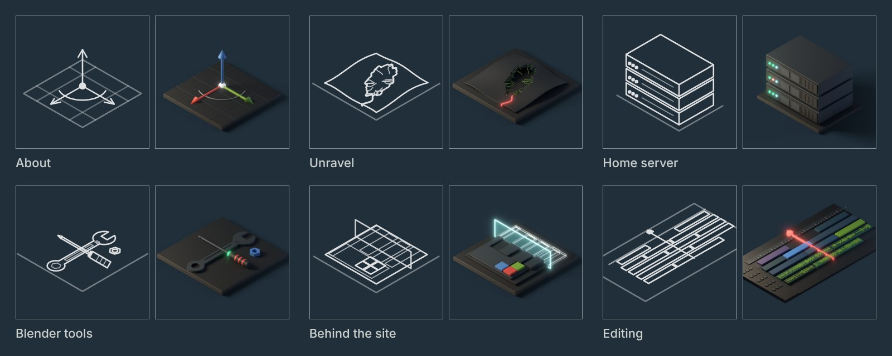

How this site is made. Every tile is a small 3D scene built by a script, shown as line art until you hover over it, when it turns into the render.
The site itself is plain HTML, CSS and a little JavaScript, with no framework and no build step. This page covers the look, the layout, how the project list works, and the pipeline behind the tiles.

The look
- Quiet on purpose
- The work should be the loudest thing on the page, so the site stays out of the way: one font, one background colour, one accent, and no animation beyond the tiles.
- The frame
- The page is one grid with 1px gaps, and the frame lines are simply the colour showing through those gaps. Every box lines up without drawing a single border by hand.
- Colour
- A slate background, #212f3a, with soft off-white text and a single teal accent for links and the current page. Every colour lives as a variable at the top of one stylesheet, so a change happens in one place.
- Type
- IBM Plex Sans in four weights, hosted with the site so nothing loads from elsewhere. Long text sits in a column that never gets wider than 1200 pixels, so lines stay easy to read on large screens.
- Tiles as one family
- Every tile shares the same camera, lighting and plate, and follows the same palette rules, so new projects always look like they belong.
Layout and scrolling
- A fixed frame
- On larger screens the frame fills the window and stays put. The header, the tile rail and the footer are always in view, and only the page content scrolls.
- The rail scrolls on its own
- When there are more tiles than fit, the rail gets its own scroll, held inside the rail so it never drags the page along with it.
- Keyboard first
- With only the content scrolling, the arrow keys, Page Down and Space need somewhere to go. The content area is focused quietly on load, so they work straight away.
- Phones and short windows
- On a phone a fixed frame would leave a sliver of screen for reading, so the layout becomes one column that scrolls normally: name, tiles, title, content, footer. Very short desktop windows fall back the same way.
- Sizes that breathe
- The rail's width, the side spacing and the tile gaps grow with the window between set limits, so the layout holds from a laptop to a wide monitor without breakpoints for each size.
Projects from one list
- One file
- Every project is one entry in a single list. The tile rail and the list of work on the About page are both built from it, so adding a project is one edit.
- Sorted by itself
- Projects sort by group, then by size, then by year, so a new one lands in the right place without moving anything.
- Drafts stay private
- Each project is live, draft or planned. Visitors only see live ones. Opened on my own computer, the site also shows drafts and planned projects, so I can preview pages before they're published.
Tile pipeline
One render makes everything a tile needs.
- One template
- Every tile has its own build script, but they share the same studio, camera, compositor, saving and line art code. Only the part that builds the scene changes, which is what keeps the tiles consistent.
- The same camera
- An orthographic camera at the true isometric angle, 35.264° down and 45° around, with a warm key light and a cool fill. Every object sits in the same space and catches the same light.
- Palette rules
- Objects are near-black. The accents are Blender's red, green and blue axis colours, and each tile gets its own glow colour, so no two tiles light up the same way.
- Rendered clear
- Each tile renders with a transparent background and a shadow catcher. The compositor then lays it onto the site's exact background colour, so the shadows sit on the page and there's no visible edge around the image.
- Bloom only where it glows
- The glow comes from the emission pass alone, capped so very bright parts don't take over. Three blurs, tight, medium and wide, are added on top, and their size scales with the resolution, so all three image sizes glow the same.
- Line art from the geometry
- The line art isn't edge detection on the image. Each tile lists what to draw by object name: outlines, edges, dots. Those real 3D points are projected through the render camera and written as a clean SVG, plus a smooth PNG drawn the same way. That's why the lines are crisp and never noisy.
- Saved on F12
- The line art hooks into rendering, so every F12 saves it next to the images. It always matches the camera and the objects as they are at that moment, and moving something can never leave the two out of step.
- On the page
- Each tile stacks its line art and its render, and hovering crossfades between them. The current page's tile gets a thicker border instead of staying lit. On touch screens, which can't hover, the current tile keeps its render. After clicking a tile, it stays lit on the new page until the cursor moves, because browsers don't know what's under a still cursor until then.
Credit
The look, the layout and every tile were designed and directed by me. The site's code and the scripted Blender pipeline behind the tiles were built with AI-assisted scripting, and every tile was rendered and adjusted by hand.